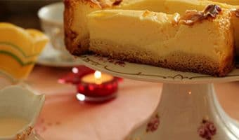

KFC TAYYORLASH RETSEPTI
KFC tovuq qanotchalarini tayyorlash retseptini ko'pchilik bilishni istaydi.Albatta restoran haqiqiy retseptni oshkor etmaydi va ...

DO'LMA TAYYORLASH - UZUM BARGLARIDAN KOVATOK RETSEPTI
Tokli do'lma(kovatok) uzum barglaridan tayyorlanadigan nafaqat o'zbek,balki kavkaz, turk va yunon oshxonalarining mashhur...

MOXITO TAYYORLASH RETSEPTI
Yozning issiq kunlarida alkogolsiz moxito kokteyli chanqoqni qoldirish uchun ajoyib ichimlik sanaladi

VAFLI TAYYORLASH RETSEPTI
Usbu retsept bo'yicha tayyorlanadigan mazzali va hushbo'y vafli yetarlicha ko'p bo'ladi

"SHUBA OSTIDAGI SELD" SALATI RETSEPTI
Shuba ostidagi seld yoxud shuba salati eng mashhur ruscha salatlardan biridir. U salatsiz deyarli hech bir bayram, ayniqsa...

CHIZKEYK TAYYORLASH RETSEPTI - 5 TA ENG MAZALI TURI
Chizkeyk - yevropa va amerika oshxonasining klassik pishirig'i. U klassik,likyorli,bananli,shokoladli yoki tvorogli bo'lishi mumkin.